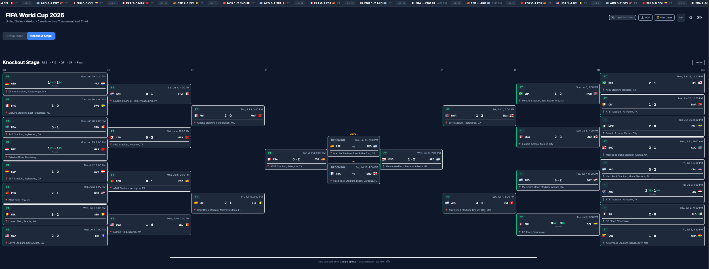
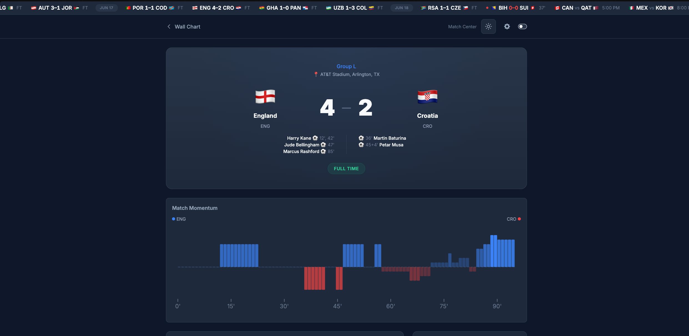

Automation / Web application Private project
World Cup 2026.
The whole tournament. In one place.
World Cup 2026 follows every match on its own. It collects live scores every 30 seconds, cross-checks them against a second source, and pushes updates to every open screen within seconds. Group standings, the knockout bracket, and detailed match threads update themselves, and the whole tournament exports as a printable A3 wall chart.

Runs itself
Live scores for all 104 matches, collected every 30 seconds and cross-checked for accuracy.
A bracket that fills itself in
Winners advance automatically, using FIFA tiebreakers and the best third-place rules.
Every match, closer
Event timelines, stats, momentum, win probability, and lineups.
Live on every screen
Updates arrive within seconds, with alerts for goals, red cards, and results.
On paper, too
Printable A3 wall charts and bracket posters, generated as PDFs.
Ready for match day
A simulation mode for testing, and an alert when the data source needs attention.




How it’s built
Tech stack.
- 01
Interface
Wall chart, bracket, and match threads that update live
- Next.js
- React
- Tailwind CSS
- Zustand
- Framer Motion
- 02
Real-time API
Serves the tournament and pushes every change to open screens
- NestJS
- TypeScript
- Socket.IO
- 03
Automation
A headless browser collects scores on a schedule and prints the PDFs
- Playwright
- Scheduled jobs
- Bull queues
- 04
Data
Matches, standings, and bracket state, with Redis for live messaging
- PostgreSQL
- Prisma
- Redis
- 05
Delivery
Containerised services behind a reverse proxy, tested in CI
- Docker Compose
- Nginx
- GitHub Actions
- Jest
Product screenshots from the project repository; displayed scores are part of the captured interface.
Next projectEducational Technology